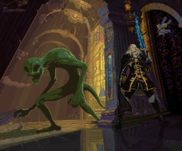

Castlevânia WIKI
Inicio
Equipamentos
Mapa
Musicas
menu
Inicio
Equipamentos
Mapa
Musicas
Prologo
Dracula's Castle
Golden Dance
The festival of Servant

Marble Gallery
Gates of Hell
Waltz of the Pearls
Requiem of the Gods
Abandoned Pit
Black Banquet
Crystal Teardrop
Cursed Sanctuary
Dance of Illusions
Demonic Banquet
Gate of Holy Spirits
Gates of Heaven
Gates of Hell
Golden dance
I am the Wind
Land of Benediction
Marble Gallery
Master Librarian
Nocturne
Prayer
Rainbow's Cemetery
Silence
Strange Bloodlines
Symphony of the Night
The Final Toccata
The Lost Portrait
The Poetic Ballad of Death
The Tragic Prince
Tower of Evil Mist
Transformation 1
Transformation 2
Transformation 3
Waltz of the Pearls
Wandering Ghosts
Wood-Carved Partita